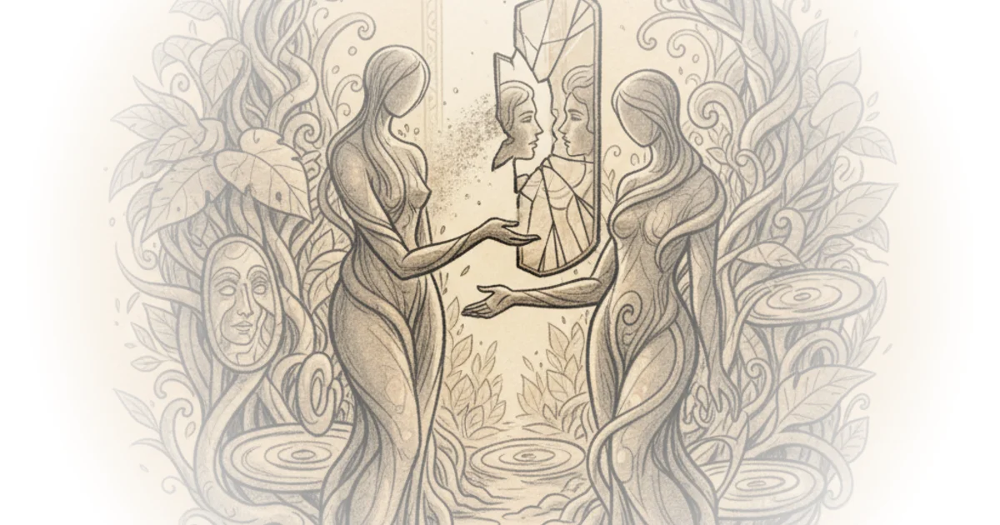
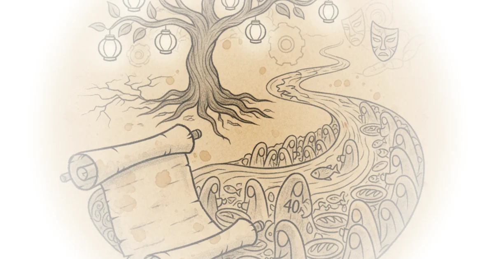
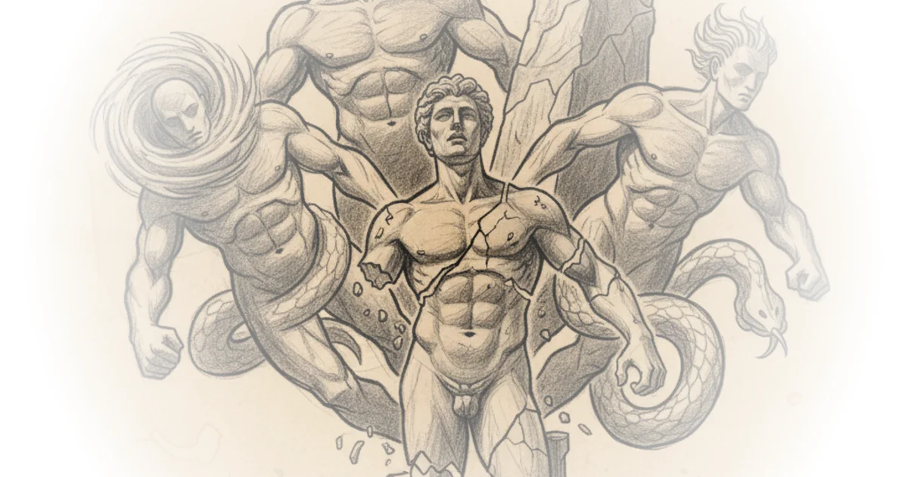
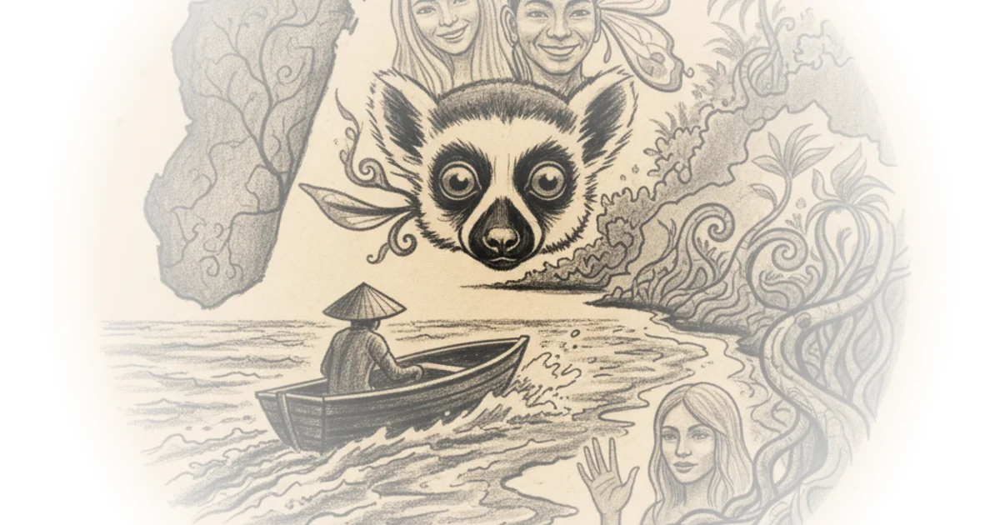
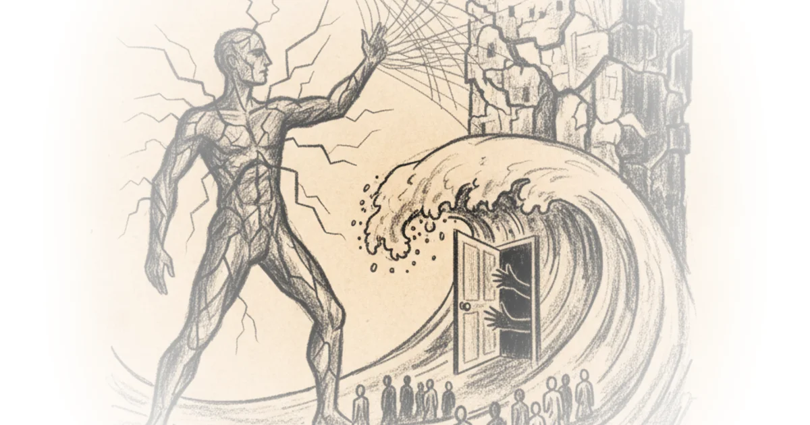
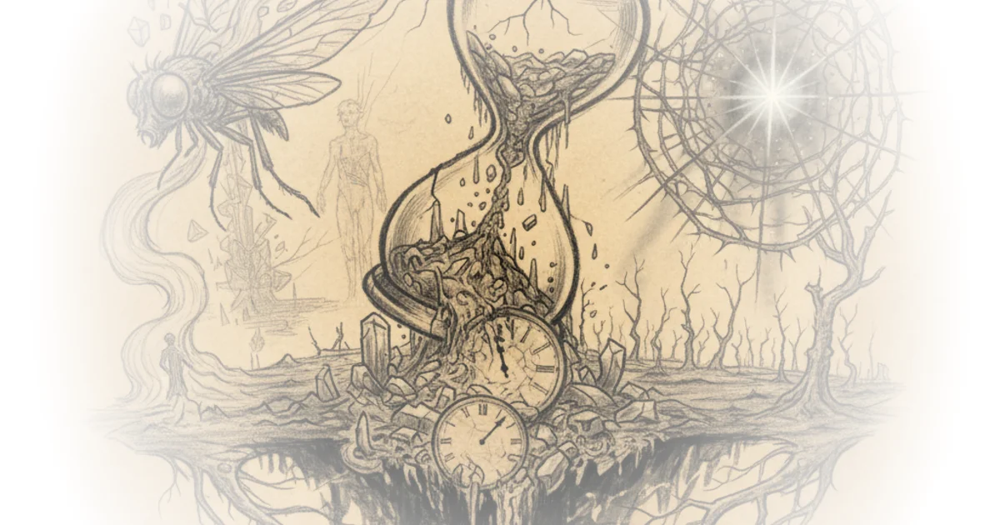
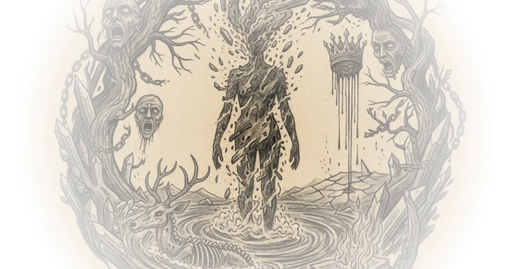
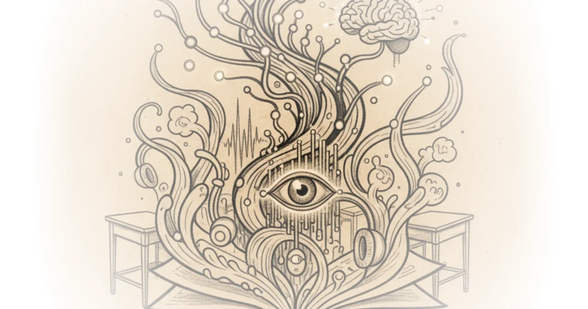
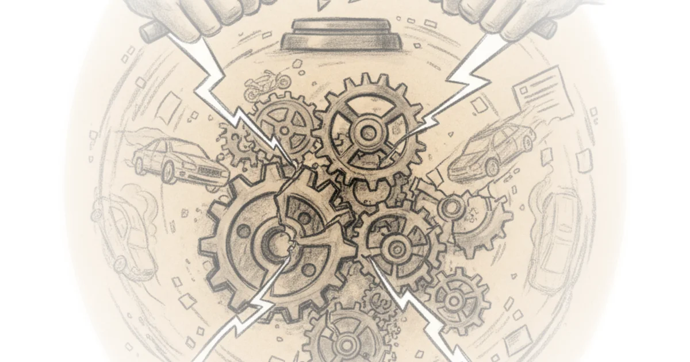

Deleuze interprets nietzsche. - Identity and difference Philosophize This! · ·Apr 23, 2025 · 29 min read · Culture
Sometimes the reason you can’t find people you resonate with is because you misread the ones you… Henrik Karlsson · ·Apr 23, 2025 · 12 min read · Culture 
A happy birthday Jonathan Rowson · The Joyous Struggle ·Apr 19, 2025 · 10 min read · Culture 
No more heroes: Or, seeking strong gods Chris Smaje · Chris's Substack ·Apr 15, 2025 · 13 min read · Culture 
Antipode – chapter 19 Various · Natural Selections ·Apr 15, 2025 · 26 min read · Culture 
The strange psychology of the long take Tom van der Linden · Like Stories of Old ·Apr 15, 2025 · 16 min read · Culture
Episode #226 ... albert camus - the rebel Stephen West · ·Apr 7, 2025 · 31 min read · Culture 
Three forms of the end of the world Rafael Holmberg · Antagonisms of the Everyday ·Apr 5, 2025 · 12 min read · Culture 
Drawing zhuangzi with colored pencils Helen De Cruz · Helen De Cruz ·Apr 4, 2025 · 13 min read · Culture
Fascism wants to disintegrate US Brandon Taylor · Sweater Weather ·Mar 30, 2025 · 15 min read · Culture 
AI tools, real classrooms Johnny Chang · AI x Education ·Mar 25, 2025 · 11 min read · Culture 
The most tragic movie of the decade Tom van der Linden · Like Stories of Old ·Mar 20, 2025 · 18 min read · Culture
How vail destroyed skiing More Perfect Union · More Perfect Union ·Mar 7, 2025 · 16 min read · Culture
Adam friedland: Behind the adam friedland show Doom Scroll · Doom Scroll ·Mar 4, 2025 · 56 min read · Culture
Episode #223 ... religion and the duck-rabbit - kyoto school pt. 3 Stephen West · ·Mar 3, 2025 · 34 min read · Culture
How to punish bad drivers Dave Amos · City Beautiful ·Feb 28, 2025 · 21 min read · Culture 
The worst kind of sequel Tom van der Linden · Like Stories of Old ·Feb 21, 2025 · 24 min read · Culture
Episode #222 ... dostoevsky - love in the brothers karamazov Stephen West · ·Feb 18, 2025 · 41 min read · Culture
How Indonesian instant noodles became a Nigerian sensation Asianometry · Asianometry ·Feb 16, 2025 · 16 min read · Culture